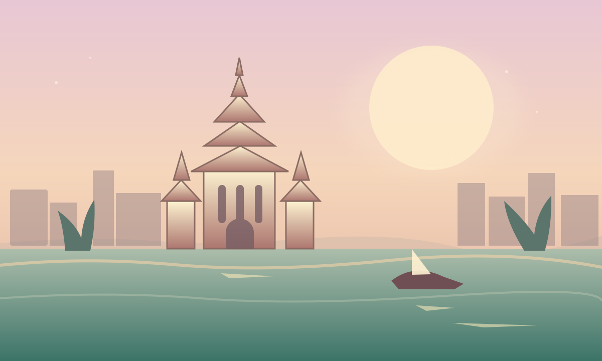

THE FAMILY TRAVEL JOURNAL · EST. 2026
一起出發，
把日子過成風景。
每個城市都有故事，每次牽起小手的旅行，都值得好好收藏。這裡是我們一家的旅行足跡。
✦ 路上見✦ 慢慢玩✦ 用心記錄

COLLECT
THE MOMENTS
✺
THE MOMENTS
✺
OUR TRAVEL ALBUM
旅程收藏館 ✳
 01 / JAPAN
01 / JAPANJUN 18 — 26, 2026 · 9 DAYS
名古屋，夏日小旅行 ↗
飛驒高山、合掌村、樂高樂園，還有值得再吃一次的鰻魚飯與棊子麵。
 02 / SOUTH KOREA
02 / SOUTH KOREAOCT 30 — NOV 03, 2026 · 5 DAYS
釜山，沿著海風出發 ↗
跟著益靖員旅，走訪彩色山城、海雲台、天空膠囊，收藏一家人的釜山海風。
03 / THAILAND
DEC 23 — 27, 2026 · 5 DAYS
曼谷，聖誕節見！ ↗
野生世界、河畔夜景、聖誕樹與小小的泰國探險。
下一趟旅程，準備加入收藏。
之後可以在這裡放入每次出遊的故事、行程與照片。